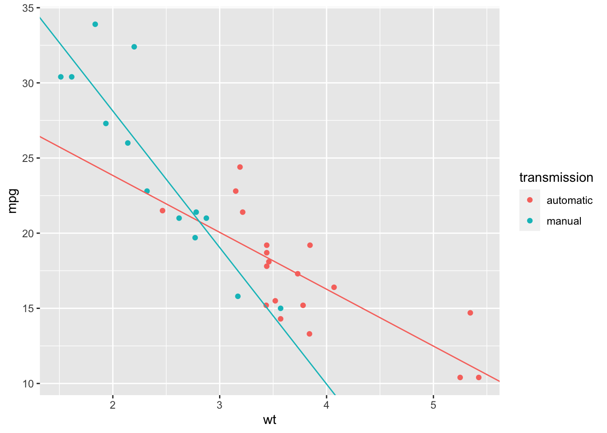

Chapter 11 Multiple independent variables
Recall the PISA maths test data from Semester 1. Here, our dependent variable was a country’s maths test score, and we had multiple independent variables: gdp, income inequality (gini coefficient), homework hours, and school starting age.
We’ll now look at how to incorporate multiple independent variables in a linear model.
If the main interest is in, say, the effect of gdp, incorporating the variables enables us to assess the effect of gdp, whilst accounting for (sometimes described as “adjusting for” or “controlling for”) possible effects of other variables.
We’ll first import the data, and create one extra column (wealthiest): a binary variable that indicates whether a country as a gdp higher and 17000.
maths <- read_csv("http://www.jeremy-oakley.staff.shef.ac.uk/mas113/maths.csv") %>%
mutate(wealthiest = gdp > 17000)
head(maths)## # A tibble: 6 × 8
## country continent score gdp gini homework start.age wealthiest
## <chr> <chr> <dbl> <dbl> <dbl> <dbl> <dbl> <lgl>
## 1 Albania Europe 413 4147 29 5.1 6 FALSE
## 2 Algeria Africa 360 3844 27.6 NA 6 FALSE
## 3 Argentina South America 409 12449 42.7 3.7 6 FALSE
## 4 Australia Oceanea 494 49928 34.7 6 5 TRUE
## 5 Austria Europe 497 44177 30.5 4.5 6 TRUE
## 6 B-S-J-G (China) Asia 531 8123 42.2 13.8 6 FALSEFor illustration, we’ll treat start.age as a factor variable with three levels, and consider modelling the effects of gdp, gini, homework and factor(start.age) on score. How might we write down such a model?
When thinking about suitable notation:
- use one letter for each quantitative independent variable;
- use one additional subscript for each qualitative independent variable.
We imagine splitting the data up into three groups:
- group \(i=1\) for countries with a
start.ageof 5; - group \(i=2\) for countries with a
start.ageof 6; - group \(i=3\) for countries with a
start.ageof 7.
Then, for the \(j\)-th observation (country) within group \(i\), define
- \(Y_{ij}\) to be the country’s score;
- \(w_{ij}\) to be the country’s gdp;
- \(x_{ij}\) to be the country’s gini coefficient;
- \(z_{ij}\) to be the mean number of homework hours per week in that country.
We interpret \(\tau_i\), for \(i=2\) (or 3) as the difference in mean score between two countries with identical values of gdp, gini and homework, but in which one has a school start.age of 6 (or 7) and one with a school start.age of 5.
We fit the model in R as follows:
lmMaths <- lm(score ~ gdp + gini + homework + factor(start.age), maths)
summary(lmMaths)##
## Call:
## lm(formula = score ~ gdp + gini + homework + factor(start.age),
## data = maths)
##
## Residuals:
## Min 1Q Median 3Q Max
## -61.398 -17.884 -0.204 17.867 69.026
##
## Coefficients:
## Estimate Std. Error t value Pr(>|t|)
## (Intercept) 4.827e+02 3.743e+01 12.896 < 2e-16 ***
## gdp 1.025e-03 2.181e-04 4.701 2.07e-05 ***
## gini -2.634e+00 6.939e-01 -3.796 0.000399 ***
## homework 8.343e+00 2.337e+00 3.569 0.000802 ***
## factor(start.age)6 3.062e+00 1.971e+01 0.155 0.877183
## factor(start.age)7 1.023e+01 2.118e+01 0.483 0.630987
## ---
## Signif. codes: 0 '***' 0.001 '**' 0.01 '*' 0.05 '.' 0.1 ' ' 1
##
## Residual standard error: 31.31 on 50 degrees of freedom
## (14 observations deleted due to missingness)
## Multiple R-squared: 0.5947, Adjusted R-squared: 0.5542
## F-statistic: 14.67 on 5 and 50 DF, p-value: 7.547e-09We read off from this \(\hat{\mu}=482.7\), \(\hat{\tau}_2= 3.06\), \(\hat{\tau}_3=10.23\), \(\hat{\beta}_1=0.001\), \(\hat{\beta}_2=-2.634\), and \(\hat{\beta}_3=8.343\).
11.1 Causation versus association
Suppose we were interested in the effect of gdp only. Let’s try fitting the model with this independent variable only:
lmMathsGDP <- lm(score ~ gdp , maths)
summary(lmMathsGDP)##
## Call:
## lm(formula = score ~ gdp, data = maths)
##
## Residuals:
## Min 1Q Median 3Q Max
## -105.932 -27.488 5.583 25.925 95.609
##
## Coefficients:
## Estimate Std. Error t value Pr(>|t|)
## (Intercept) 4.239e+02 7.975e+00 53.153 < 2e-16 ***
## gdp 1.417e-03 2.322e-04 6.101 5.67e-08 ***
## ---
## Signif. codes: 0 '***' 0.001 '**' 0.01 '*' 0.05 '.' 0.1 ' ' 1
##
## Residual standard error: 43.18 on 68 degrees of freedom
## Multiple R-squared: 0.3537, Adjusted R-squared: 0.3442
## F-statistic: 37.22 on 1 and 68 DF, p-value: 5.667e-08Notice how the slope estimate for gdp has changed from that in lmMaths: it has increased by about 50% to 0.00147. Two points to note are
gdpandginiare correlated. This means that removingginifrom the model is likely to change the estimated slope forgdp. This is something we try to avoid, if we can design the experiment (i.e. we can choose the values of the independent variables.)- If we are hoping to learn a causal relationship between
gdpandscore, we need to include other variables in the model which may also effectscore. If these other variables are omitted, we are (potentially) instead learning about the association betweengdpandscore. An interpretation of this is as follows.lmMathstells us that when we increasegdpby one unit, and all other variables stay the same, we expectscoreto increase by 0.001 units. If we were confident that all other relevant variables were unchanged, the change inscoremust be caused by the change ingdp.lmMathsGDP(together with our knowledge of the correlation ofgdpandgini) tells us that when we increasegdpby one unit, we expect other variables such asginito change. The combined change in all these variables means that we expectscoreto increase by 0.0014 units. We cannot necessarily attribute the change inscoreto the change ingpd: it might have been caused by another variables changing.
11.2 Analysis of Covariance
Recall this plot we produced in Semester 1, Chapter 1:
ggplot(maths, aes(x = gini, y = score, colour = wealthiest))+
geom_point() +
geom_smooth(method = "lm")We have two fitted regression lines: one for the group wealthiest == TRUE (countries with gdp\(>17000\)), and one for the remaining countries. This sort of modelling with multiple regression lines is sometimes referred to as Analysis of Covariance (ANCOVA). The emphasis is usually on comparing means between groups, adjusting for different values of covariates between groups.
We will now consider how we would write down this model, and how to fit it in R.
Again, the idea is to use an extra subscript for the qualitative variable (wealthiest): define \(Y_{ij}\) to be the score for the \(j\)th country in group \(i\), where \(i=1\) corresponds to wealthiest==FALSE and \(i=2\) corresponds to wealthiest==TRUE, with \(x_{ij}\) the corresponding gdp value. Our model is
\[
Y_{ij} = \mu + \tau_i + \beta_i x_{ij} + \varepsilon_{ij}
\]
with \(\varepsilon_{ij}\sim N(0,\sigma^2)\). Again this is overparametrised, so we set \(\tau_1=0\). Note that the slope parameter for gdp depends on whether wealthiest is FALSE or TRUE. We think of this as an interaction between gdp and wealthiest. We fit the model in R as follows:
lmMathsWealthiest <- lm(score ~ gini * wealthiest, maths)
summary(lmMathsWealthiest)##
## Call:
## lm(formula = score ~ gini * wealthiest, data = maths)
##
## Residuals:
## Min 1Q Median 3Q Max
## -84.730 -17.966 -0.595 15.104 113.483
##
## Coefficients:
## Estimate Std. Error t value Pr(>|t|)
## (Intercept) 492.3368 32.5735 15.115 <2e-16 ***
## gini -1.7730 0.8507 -2.084 0.0415 *
## wealthiestTRUE 75.0248 61.7823 1.214 0.2295
## gini:wealthiestTRUE -0.4358 1.8385 -0.237 0.8134
## ---
## Signif. codes: 0 '***' 0.001 '**' 0.01 '*' 0.05 '.' 0.1 ' ' 1
##
## Residual standard error: 36.19 on 59 degrees of freedom
## (7 observations deleted due to missingness)
## Multiple R-squared: 0.5292, Adjusted R-squared: 0.5053
## F-statistic: 22.11 on 3 and 59 DF, p-value: 1.022e-09We read off \(\hat{\mu}=492.3368\), \(\hat{\tau}_2 = 75.0248\) and \(\hat{\beta_1} = -1.7730\).
The row gini:wealthiestTRUE corresponds to the difference \(\hat{\beta}_2- \hat{\beta}_1\), so we read off \(\hat{\beta}_2= -1.7730 -0.4358\).
We’ll try to redraw the plot, to check we’ve interpreted everything correctly! (To see what the default colours are in hex format, try scales::show_col(hue_pal()(2)))
ggplot(maths, aes(x = gini, y = score, colour = wealthiest))+
geom_point() +
geom_abline(slope = -1.773, intercept = 492.3368, col = "#F8766D" )+
geom_abline(slope = -1.773 - 0.4358,
intercept = 492.3368 + 75.0248,
col = "#00BFC4" )The formatting of the lines is slightly different, but otherwise this looks correct.
Example 11.1 (Fitting a linear model in R: ANCOVA.)
Consider the built in dataset mtcars (see ?mtcars for details)
head(mtcars)## mpg cyl disp hp drat wt qsec vs am gear carb
## Mazda RX4 21.0 6 160 110 3.90 2.620 16.46 0 1 4 4
## Mazda RX4 Wag 21.0 6 160 110 3.90 2.875 17.02 0 1 4 4
## Datsun 710 22.8 4 108 93 3.85 2.320 18.61 1 1 4 1
## Hornet 4 Drive 21.4 6 258 110 3.08 3.215 19.44 1 0 3 1
## Hornet Sportabout 18.7 8 360 175 3.15 3.440 17.02 0 0 3 2
## Valiant 18.1 6 225 105 2.76 3.460 20.22 1 0 3 1We’ll be using the column am which describes transmission type. To make it more readable, we’ll do
mtcars2 <- mtcars %>%
mutate(transmission = factor(am, labels = c("automatic", "manual")))- Fit the following model in R:
\[
Y_{ij} = \mu + \tau_i + \beta_i x_{ij} + \varepsilon_{ij}
\]
where \(Y_{ij}\) is the fuel economy mpg of the \(j\)th car in group \(i\), and \(x_{ij}\) is the corresponding weight wt, for \(i=1,2\). Group \(i=1\) corresponds to automatic cars, and \(i=2\) corresponds to manual cars.
For a car with weight of 3 units (1000 lbs), what is the expected change in fuel economy from changing from automatic to manual?
We can plot the fitted model with the commands
ggplot(mtcars2, aes(x = wt, y = mpg, colour = transmission)) +
geom_point() +
geom_smooth(method = "lm", se = FALSE)Try to (approximately) redraw this plot, without using geom_smooth(): use geom_abline() instead.
- In R we do
lmCars <- lm(mpg ~ wt * transmission, mtcars2)
summary(lmCars)##
## Call:
## lm(formula = mpg ~ wt * transmission, data = mtcars2)
##
## Residuals:
## Min 1Q Median 3Q Max
## -3.6004 -1.5446 -0.5325 0.9012 6.0909
##
## Coefficients:
## Estimate Std. Error t value Pr(>|t|)
## (Intercept) 31.4161 3.0201 10.402 4.00e-11 ***
## wt -3.7859 0.7856 -4.819 4.55e-05 ***
## transmissionmanual 14.8784 4.2640 3.489 0.00162 **
## wt:transmissionmanual -5.2984 1.4447 -3.667 0.00102 **
## ---
## Signif. codes: 0 '***' 0.001 '**' 0.01 '*' 0.05 '.' 0.1 ' ' 1
##
## Residual standard error: 2.591 on 28 degrees of freedom
## Multiple R-squared: 0.833, Adjusted R-squared: 0.8151
## F-statistic: 46.57 on 3 and 28 DF, p-value: 5.209e-11From this, we read off \(\hat{\mu}=31.4161\), \(\hat{\beta}_1=-3.7859\), \(\hat{\tau}_2=14.8784\), \(\hat{\beta}_2=-3.7859 -5.2984\).
- An automatic car with weight 3 units has estimated expected
mgp: \[ E(Y) = \hat{\mu} +\hat{\beta}_1\times 3= 31.4161 -3.7859 \times 3 = 20.0584 \] If the car changes from automatic to manual, the estimated expectedmgpis \[ \hat{\mu} +\hat{\tau}_2 +\hat{\beta}_2\times 3 \] The change is estimated to be \[\hat{\tau}_2 + 3(\hat{\beta}_2 - \hat{\beta}_1) = 14.8784 -5.2984\times 3. \] - We (approximately) reproduce the plot with the commands
ggplot(mtcars2, aes(x = wt, y = mpg, colour = transmission))+
geom_point() +
geom_abline(slope = -3.7859, intercept = 31.4161, col = "#F8766D" )+
geom_abline(slope = -3.7859 -5.2984,
intercept = 31.4161 + 14.8784,
col = "#00BFC4" )